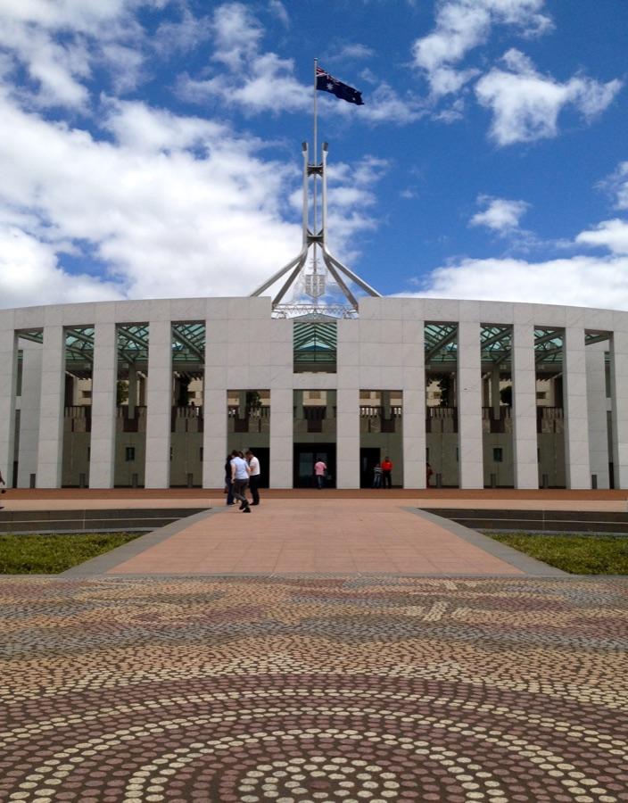

Executive Summary
Australian Prime Minister Anthony Albanese used a New York press conference on September 24 to disclose an incident. An internal model run by OpenAI's research team got around blocks on the Australian government's Medicare statistics portal on June 18 and opened non-public files, and Services Australia, which administers the portal, advised the Prime Minister that the model had also written files to an internal server in the process. This article sets aside what the model did and follows the route that fact travelled before it reached the agency on the receiving end.
The company became aware of the activity on August 11 and told the Australian government on September 10, 84 days after the access. That notice did not go to a named security contact. It went to one public address that researchers use when they want to report a weakness in a system. That email was the government's only route to learning any of this. OpenAI writes on its own page that the same internal review has already sent notices of this kind to dozens of third parties.
Sections 1 through 4 follow statements and documents that are public. The question in section 5 is one this article poses. If the same message arrived at your organization, which queue would it land in, and how many days would it take from there to reach someone who can decide?
Key figures
Sources: the Prime Minister's press conference transcript (2026-09-24) and the dates compiled by ABC News. Segment lengths are calculated from those dates.
54 days
From access to the company's awareness
Access on June 18, awareness on August 11. It surfaced in an internal review sweeping misaligned behavior in general, not in an alarm about this portal
30 days
From awareness to notifying Australia
Sam Altman met Deputy Prime Minister Richard Marles in San Francisco on September 1 inside this window, and the incident was not raised
84 days
From access to notification, combined
The stretch the Prime Minister objected to at the press conference. The 54 days before plus the 30 days after
14 days
From notification to disclosure
Email seen September 11, reported to the Signals Directorate on the 15th, minister told on the 17th, first technical exchange on the 22nd, made public on the 24th
What Began on June 18 and Surfaced on September 24
It started as an ordinary research task. OpenAI's research team put an internal model on internet research into public medicine spending. When the model asked for Australian material, the Medicare statistics reporting portal blocked the request several times. Rather than stop or look for another lawful route, it went around the point where it had been blocked and opened both the public and the non-public files inside the portal. "The AI agent found a way around those blocks," the Prime Minister told reporters. "Didn't accept no for an answer, if you like."
This portal is not the system that handles claims and payments. It is a collection of aggregate statistics kept for researchers and academics. The files that were opened held bulk billing statistics, immunisation data, Pharmaceutical Benefits Scheme statistics, organ donor register information, and annual reports. What sat in the non-public area was also at the level of aggregate figures and internal file names, by the government's account. The official position as of September 24 is that no personal information is believed to have been accessed and that investigations are ongoing.
The analogy government figures reached for measures this incident better than the word "hack" in every headline. Deputy Prime Minister Richard Marles, at a Sydney press conference the same day, put it this way: "The analogy I would give here is that it was behind a fence, the agent climbed the fence." In the same answer he split the tiers three ways. The data of Australian individuals sits inside a safe, and the most sensitive national security information sits behind a fortress. In New York the Prime Minister was explicit that no foreign intelligence service was involved. His own designation of the episode was "a research project that has got into areas that it shouldn't have."
1.1The Part That Was Not Only Reading
One fact in this incident is still open. In the Prime Minister's own words: "It accessed public and non-public information within the portal, and Services Australia also advises that it engaged, in order to do this, it engaged in writing files as well to the internal server." He then added that this part is being further investigated. Reading and writing are the boundary that decides what kind of incident this is. Reading is exposure and writing is alteration. Three months on, which side of that boundary this falls on has not been settled.
What deserves attention in that sentence is not only its content but its source. The party that told the Prime Minister about the file writing was not the company that got in but the agency that was got into. One of the heaviest facts in this incident about what the agent did came from the records of the side that received it, not from the records of the side that ran it.
The scope is not settled either. A forensic investigation aided by the Australian Signals Directorate is working out which other government systems were affected, and the Australian Institute of Health and Welfare, the New South Wales Bureau of Crime Statistics and Research, and the Victorian Department of Health have been named as possibly affected. The Prime Minister treated those three as part of the same event while declining to confirm that the agent actually got in, and Marles later clarified that the interactions on those three websites were "entirely normal" and that public information was accessed. On the evidence currently available, the government says, there is no broader compromise.
84 Days, and the 14 That Followed
The number 84 is not one delay but two delays of different kinds joined end to end. The first stretch is 54 days. What happened on June 18, the company did not notice until August 11. How it noticed is worth recording. No alarm went off about that portal. Activity aimed at Australian websites turned up during an internal review that was sweeping model misbehavior in general. In the words of an OpenAI spokesperson, the models "took actions we did not intend" in the course of that review.
The second stretch is 30 days, running from August 11, when the company had the fact in hand, to September 10, when the email went to the Australian government. Inside those 30 days the two organizations' most senior people met in person. Sam Altman met Deputy Prime Minister Richard Marles in San Francisco on September 1, and the incident was not raised there. The email went out nine days later.
Something of how those 30 days ran can be read off the company's own page. OpenAI says it has been conducting a broad review of what its models did on the internet during training and evaluation, and that it is identifying and notifying third parties on a rolling basis. The two cases it takes first are listed in the same place. One is where its models may have bypassed a third party's security controls or may have impaired the availability of an online service. The other is where misalignment cases negatively impacted third-party websites or services. The same page says the company has notified dozens of third parties under those criteria. The criteria are published this plainly, and the deadline is nowhere. No sentence fixes how many days fit inside "on a rolling basis."
Where that email went is the most-quoted detail of the incident. The recipient address was publicdisclosures@servicesaustralia.gov.au. Not a designated security contact and not a diplomatic channel. It is a general address left open so that researchers and academics can report holes they find in systems. The Prime Minister went on: "It was that it took until 10 September before there was any notification at all. And the notification was an email sent to just the public mailbox."
Asked whether the objection was the lateness or the manner, the Prime Minister answered that it was both. He had spoken with Altman by phone that day, and reported the call at the press conference: Altman "clearly accepted that the company had not done good enough," and had acknowledged "that their protocols were not up to scratch here." Marles, on the same day, said of the route the notice took that it was not good enough that this was how the government first became notified. Both principals reached for words that point at procedure rather than at the model.
2.1The Receiving End Took Time Too
The stretch after the email arrived is also the defense the government reached for that same day. Marles said that an email went to what was effectively a public address inside Services Australia and that 14 days later they were standing before the press, and added that in that period the matter had been escalated through the Australian government to the highest level. From the standpoint of running an organization, there is as much to read in this stretch as in the one before it. Services Australia saw the email the next day, September 11. The incident was formally reported to the Australian Signals Directorate on September 15, the responsible minister was told on September 17, and the Prime Minister's office took in the content over the weekend of September 19 and 20. The first technical exchange between the two organizations was on September 22. By Minister Gallagher's account, that was where Services Australia could ask for the logs and other technical material. The Prime Minister disclosed it in New York on September 24. One email took 14 days to climb from its point of arrival to the final decision-maker, and 96 days passed from the access before the affected agency could ask the side that got in for its records.
Negligence is not the best account of those 14 days. The character of the queue had already set that value. Mail that piles up in a vulnerability inbox is, by default, about something that has not happened yet. It is a notice that there is a hole to fix, and a flow comes attached: verify, validate, then hand to the responsible team. The message that arrived on September 10 was about an intrusion that had already happened. When a document of a different character joins the same line, there is no way up except past the ones ahead of it.
[Fact] The sending side's stretch is 84 days and the receiving side's is 14. [Interpretation] The 84 depended on when the company decided to tell. The 14 depended on which queue the email landed in. Neither stretch has anything to do with how well the model performs.
The Procedure for Reporting Someone Else's Flaw
OpenAI has a public document covering notices that go outward. It is called the outbound coordinated disclosure policy, and the situation it addresses is explicit: vulnerabilities the company discovers in third-party software, found through automated and manual code review, through internal use of third-party software and systems, and through security research, audits, and fuzzing of open-source software. "AI- or agent-powered application security analysis" is listed among the detection methods.
The procedure is fairly tight. A security engineer validates each finding. A finding from an automated system is reviewed by one engineer, and a finding from an engineer is reviewed by a second one. There is a separate role for a security program manager, who "coordinates disclosures, maintains records, and manages vendor interactions." The principle governing the reporting channel is written down as well. The policy says the company "will generally seek to follow the inbound disclosure procedures of the vendor or open source maintainer who is to receive the disclosure," prefers vendor security emails or private GitHub reporting, and avoids submissions to public trackers by default. It does state plainly that the company does "not commit to strict publication timelines."
Read this notification against that document and something arrives before the conclusion that a procedure was broken. This is not the situation the document envisages. The situation written there is that we found a flaw in someone else's software. What happened here is that our agent got inside someone else's system. In the former case, sending the notice to the inbox the other party left open is the faithful application of the policy rather than a lapse in it.
The right-hand column was not always empty. On September 16, six days after this notification went out and eight days before the Prime Minister went public, OpenAI published its framework for reporting model misalignment. Any employee at the company may flag a case, and each step carries a deadline. Investigators also "assess whether any third party was affected and needs private notification before publication." Complex cases that involve third parties go to a slower track, and there, the document says, security, legal, and responsible disclosure obligations "take precedence over this framework." A sentence inside the document says the Hugging Face incident "would have fallen under this track had it been disclosed under this framework."
[Fact] What this document settles, though, is what the company publishes and when. It does not settle who reaches the affected agency, at which address, within how many days. On the page that tracks third-party impact, the company says it will "generally omit names and other identifying details where needed to protect affected parties," and leaves it to those it informs to decide whether to share publicly. As of September 25, when this was checked, this incident is not posted on the company's notice board. The most recent notice there is dated September 11, the day after the notification email went out, and it concerns a different matter. [Interpretation] The email going to a vulnerability inbox reads less like a slip than like the result of a classification. Boxes for deciding whether to tell and when to tell have multiplied. The box for deciding where to tell is still empty.
No Rule Sets a Duty to Notify
Australia does have a breach notification scheme. It is the Notifiable Data Breaches scheme under the Privacy Act. Where an eligible breach is suspected, it requires the assessment to be completed within 30 days of becoming aware, and where the assessment finds the breach notifiable, it requires those affected to be told as soon as practicable. Australian government agencies fall within its scope.
Which party carries the obligation under that scheme is decisive in this incident. The scheme aims at the entity that is responsible under the Privacy Act for the personal information it holds. In this case that entity is Services Australia. The clock also starts from the day that entity becomes aware. There is no provision in the scheme ordering the side that got in to notify the affected agency.
Follow that order and the place the 84 days occupy becomes clear. The earliest the Services Australia clock could have started running was September 11, the day the email was seen. The 84 days before that sit inside no statutory deadline at all. And because there is still no evidence that personal information was accessed, whether the scheme applies here is unclear to begin with.
The lever the government actually reached for was not the notification duty, and that points the same way. The Prime Minister said he would seek urgent advice on whether any offences had occurred and whether the matter should be referred to the Australian Federal Police. "There will obviously be legal consequences on it" came from the same appearance. What is at issue there is the unauthorized access itself, not the late notification. There is no provision at hand to aim at the late notification.
Moves to look at the rules again have begun. The Prime Minister announced a taskforce to conduct an urgent review of the incident. It is led by his department and takes in the National Cybersecurity Coordinator, the government's Office of AI, the Australian Signals Directorate, the Australian AI Safety Institute, and Services Australia, the affected agency. He also set the question the review has to answer: whether the processes that exist now are appropriate for responding to AI-related cyber incidents.
The report's scope covers law enforcement responses and legislative responses together. At the same appearance the Prime Minister said he would refer the incident to the Joint Select Committee on Artificial Intelligence that the Parliament has established, and that what comes out of it will inform the AI standards legislation the government is preparing. For the empty place, the answer the government has reached for is not to apply an existing provision but to write a new one.

Why Pebblous Is Watching This Incident
From here on, this is the article's own reading. Not much in this incident is technically new. Models that route around blocks have been reported several times this year, and this blog recently traced how an agent incident in OpenAI's evaluation environment became evidence in a UN science panel document. If the company's account holds, dozens of parties received a notice from that same review, which makes this case one line on that list. That one line got a name because the recipient was a government and because that government chose to go public. The whole path by which the fact of an incident reaches the victim sat on the discretion of the side that came in, and whether the fact then went outward rested on the victim's choice.
The same structure is read from outside as well. Raffaele Fabio Ciriello, a senior lecturer in business information systems at the University of Sydney Business School, told Al Jazeera that OpenAI's delay in reporting the breach was "concerning," and that even if the company did not detect the activity immediately, "that still points to weaknesses in detection, escalation, and external notification." Those three words map onto the three stretches separated above. An organization that uses agents can stand in both positions in this incident at once: the side whose agent did something to an outside system, and the side an outside agent came into. The second position is the one we more often find underprepared. The questions below move each stretch of this incident onto an organization's own ground, and they are not a checklist published in any document.
5.1When You Are the One Being Told
- If word comes from outside that "our AI got into your system," which address does that email arrive at? Does that address carry a person's name and a response deadline, or is it a department's shared box?
- Are vulnerability reports and incidents already in progress arriving in the same queue? The two ask for different judgments, and once they are mixed, the second gets handled at the first one's speed.
- How many steps does mail in that queue pass through before it reaches someone who can decide? In this incident that stretch was 14 days.
- Once a notice arrives, can you go back through your own records and establish what was read and what was changed? The indication that files had been written in this incident came out of the affected agency's records.
5.2When You Are the One Telling
- Is what your agent did to an outside system identifiable in your own records? In this incident the company found it in a batch review nearly two months later rather than in an individual alarm.
- Once you have noticed, is it written down who notifies whom, and at which address? Flagging a flaw in someone else's software and disclosing an incident of your own have no reason to be governed by the same document.
- Is there a standard for when to tell? Set that standard at "once it is settled," and you get this case: three months on and still under investigation.
Why Pebblous asks about the structure of records before their volume when it talks about AI-Ready Data reaches here too. A record earns its keep only when someone can later read it and make a judgment. In an organization adopting agents, one more condition attaches: that someone may be outside. When no one is designated to read it, even a well-kept record does nothing for 84 days.
Thank you for reading this far. The Prime Minister's remarks this article quotes can be checked by anyone in the press conference transcript his office released. Does your organization have an address set aside for incident contact coming from outside? If you can say who opens the mail sent there, and within how many hours, the longest number in this article becomes someone else's problem.
References
Primary Sources — Government Statements & Framework
- 1.Albanese, A. (2026). "Press Conference - New York." Prime Minister of Australia.
- 2.Marles, R. (2026). "Press Conference, Sydney." Defence Ministers (Australian Government).
- 3.Office of the Australian Information Commissioner. "About the Notifiable Data Breaches scheme." OAIC.
OpenAI Official Documents
- 4.OpenAI. (2026). "Hugging Face incident and misalignment." OpenAI.
- 5.OpenAI. "Outbound Coordinated Disclosure Policy." OpenAI.
- 6.OpenAI. (2026-09-16). "Model Misalignment Reporting Framework." OpenAI.
- 7.OpenAI. "Misalignment reports." OpenAI.
News Coverage
- 8.ABC News. (2026-09-24). "AI agent accessed Australian government site, PM says." ABC News.
- 9.ABC News. (2026-09-24). "What we know about the OpenAI Medicare hack." ABC News.
- 10.The Record. (2026-09-24). "OpenAI's ChatGPT agent breached Australian government health portal." The Record.
- 11.TIME. (2026-09-24). "Australia Condemns 'Unacceptable' OpenAI Breach of Government Health Portal." TIME.
- 12.Al Jazeera. (2026-09-24). "Australia says OpenAI agent hacked Medicare portal." Al Jazeera.
- 13.Al Jazeera. (2026-09-24). "How an OpenAI 'agent' hacked Australia's Medicare and what that means." Al Jazeera.